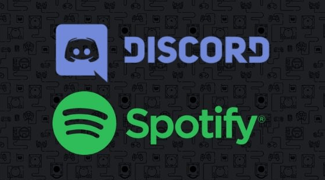

Les Daily Playlist
Chaque jour Spotify vous founis 4 dayli playlist qui ce base selon vos dernières écoute du moment !

Spotify est un service de multimédia qui vous donne accès à une immense bibliothèque de musiques et de podcasts.
Chaque jour Spotify vous founis 4 dayli playlist qui ce base selon vos dernières écoute du moment !
Enormément de playlist sont disponible entre celles mises à jours par spotify et les utilisateurs !
Spotify fonctionne également très bien avec discord ce qui permet d'écouter la musqiue avec vos amis dans les channels.
